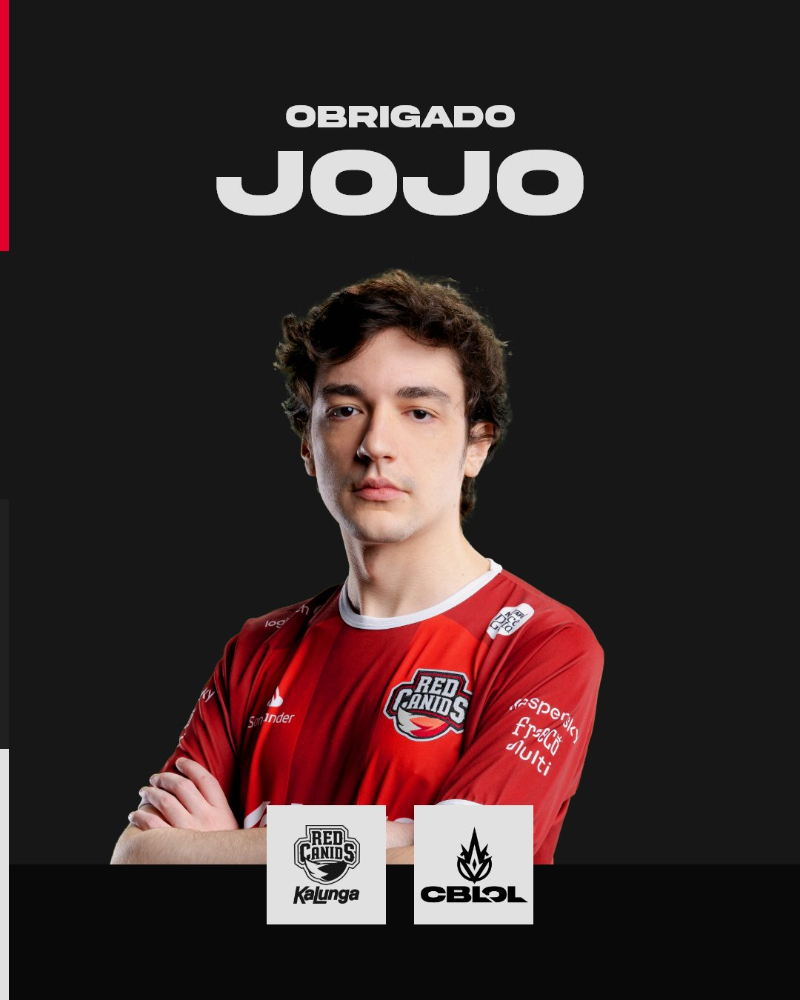
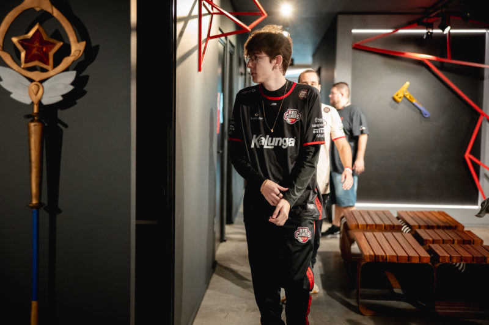

Noticias
RED Canids kalung faz texto em despedida do seu agora ex jogador Jojo
"hoje nos despedimos de Gabriel "JoJo" Dzelme de Oliveira.
Jojos, somos gratos por todo seu empenho durante esse período. desejamos todo o sucesso do mundo pra ti na sequência de sua carreira.
deu pra matar a saudade da rabugice durante do primeiro split de CBLOL 2024.
como tu mesmo disse, obrigado e adeus 💖"

RED Canids preferiu optar por frosty como suporte
A RED viveu o impasse entre escolher frosty ou Jojo como suporte da ORG.
Segundo o jornalista Luís Santana, o ADC da equipe, Brance, tinha uma preferência:
"O Brance sempre gostou de jogar com o frosty, muito muito mesmo. Sempre foi um dos caras que ele mais gostou e que ele mais queria jogar junto, sabe?
Então, acredito que tenha um pouco disso, mas não é nada definido, só existe a possibilidade."
